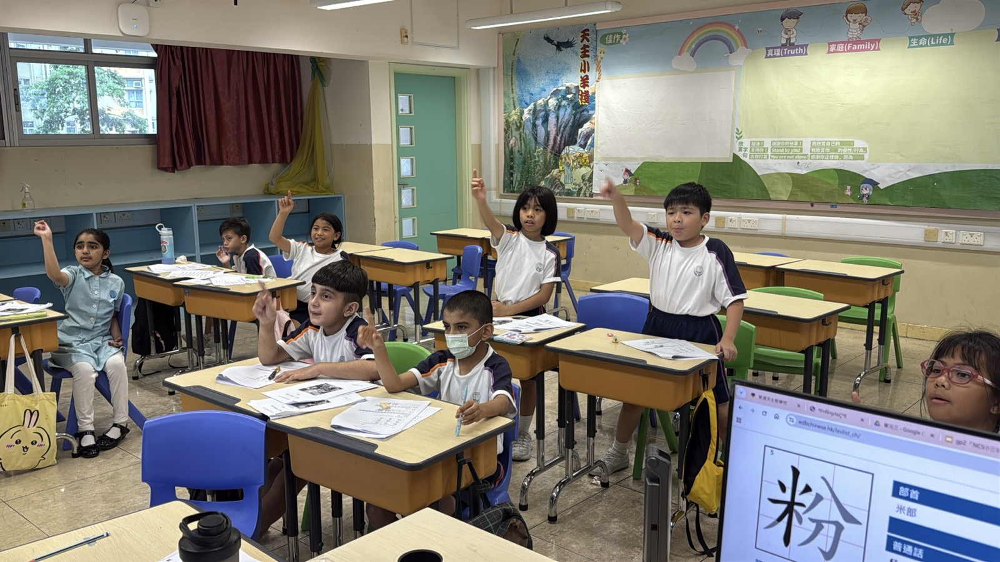
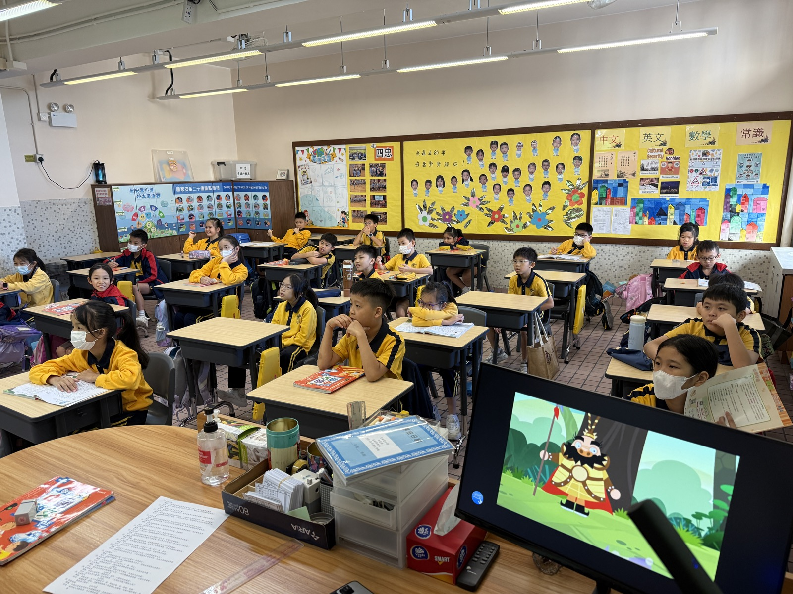
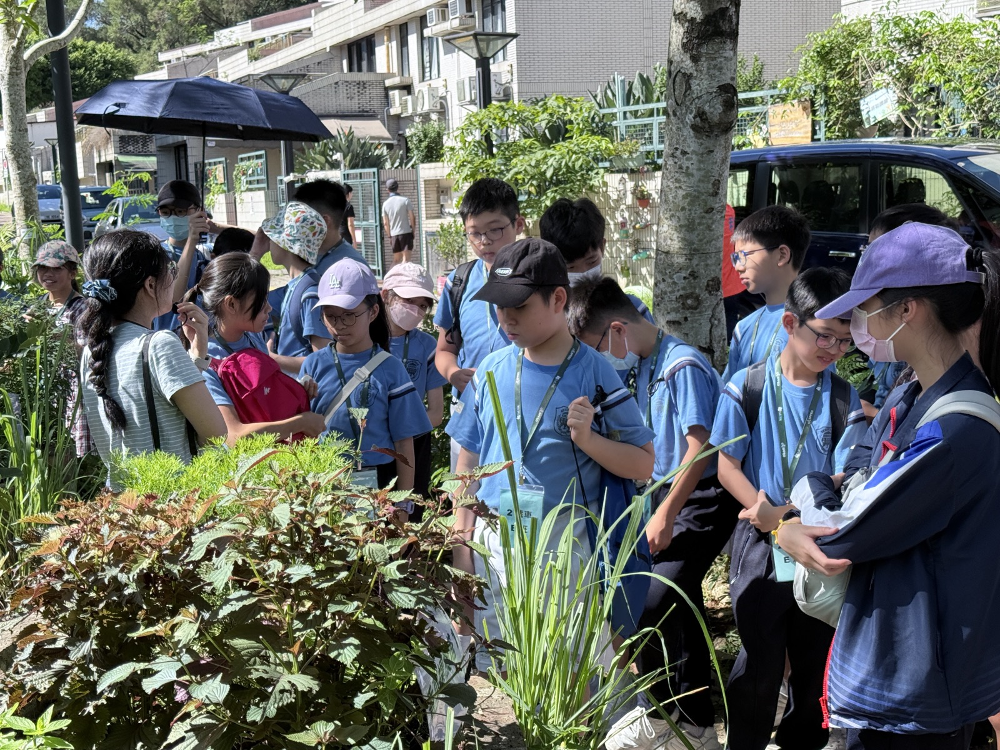
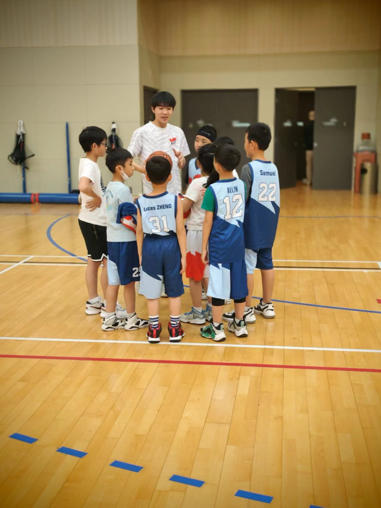
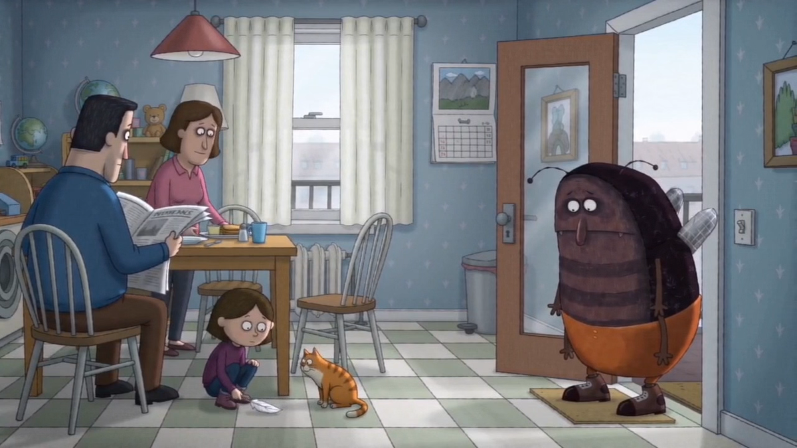
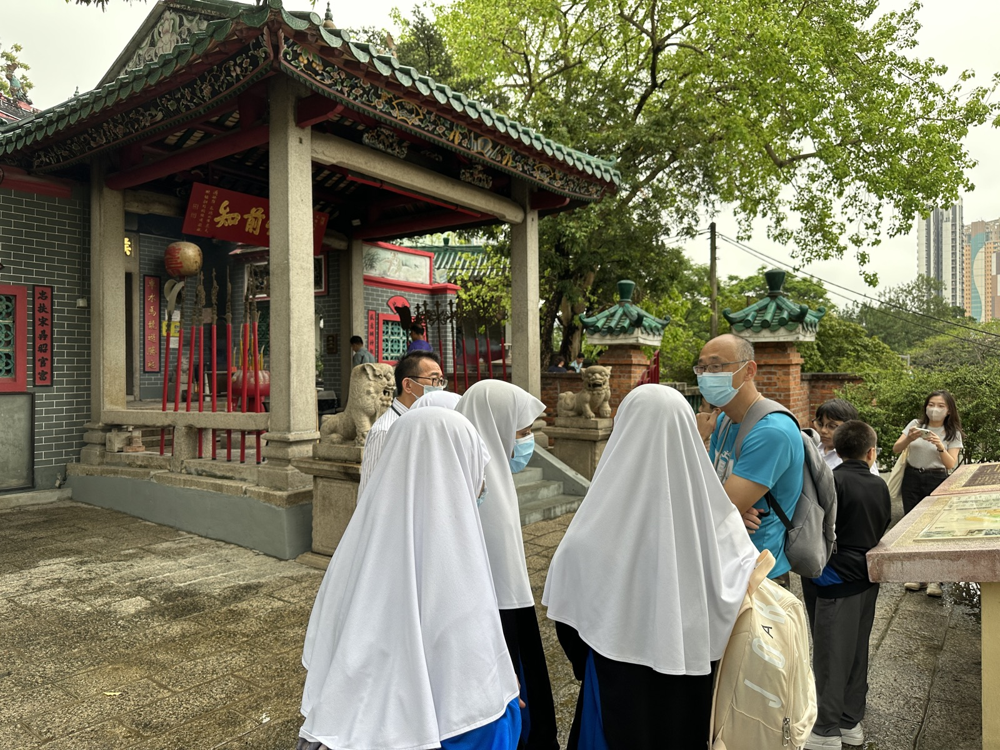
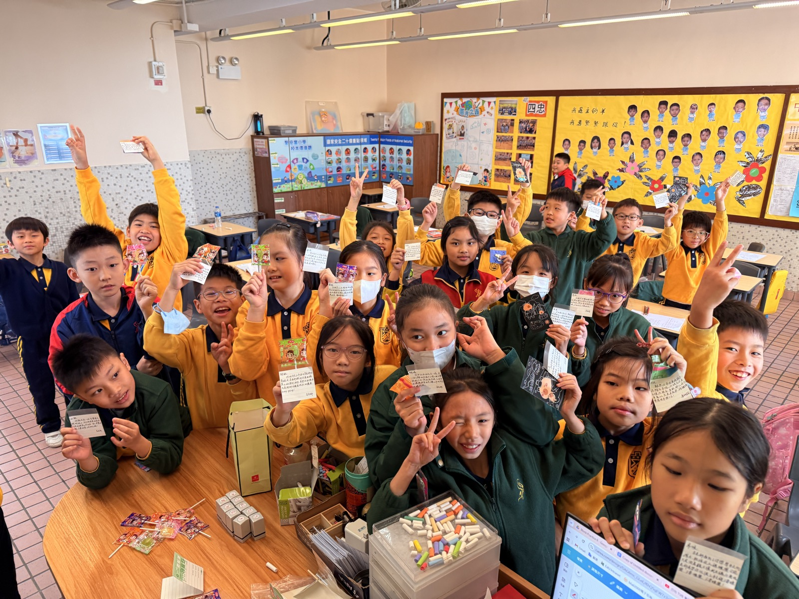
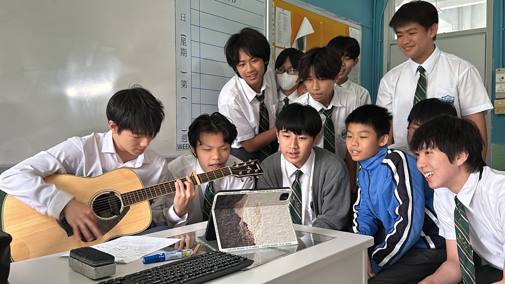

應徵小學中文科合約教師
李帥鋭
中國語文教育榮譽學士學位｜香港教育大學
我相信中文教育的核心在於「喚醒」：喚醒學生對語文的興趣、對思考的熱情，以及對生命的感悟。我的教學重視讀寫結合、思辨提問、照顧學習差異，更積極將AI融入進校園，持續探索創新教學的各種可能。
香港教育大學
GPA 3.44 / 4.3
教育實習優異
普教中及普通話科支援
About
關於我
本人現為香港教育大學中國語文教育榮譽學士五年級學生，預計於 2026 年 6 月畢業，總平均績點 3.44 / 4.3，達一級榮譽水平。曾於小學及中學進行中文科教學實習，並參與非華語中文銜接課程、分層教材設計、普通話題庫編寫及全方位學習活動。
除語文教學外，我亦關注學生的全人發展。過往經驗包括社區導賞、跨代共融、中華文化體驗、籃球訓練、音樂活動及電子學習支援，期望以專業與耐性陪伴學生在不同情境中建立自信。
Philosophy
看見每一位學生
以學生為本
我深信每一位學生都有獨特的價值。教師不只是傳授知識，更要在學生尚未被看見的地方，發現其能力與光芒。
以閱讀帶動寫作
閱讀是輸入，寫作是輸出。課堂中我重視提問式閱讀、預測、推論與讀寫結合，讓學生由理解文本走向有層次的表達。
語文是「思維」
中文課不應只停留於技法操練。我會引入辯論、生活情境與中華文化元素，培養學生的思考、品德與文化感。
Teaching Practice
教學與學校經驗
以中文科教學為主軸，結合分層支援、非華語中文、電子學習與全方位學習經驗。
聖安當小學｜中文科實習教師
教授小四中文科，運用多模態、支架式及讀寫結合策略，參與科組教研、同儕觀課及單元教案協作。
東涌天主教小學｜暑期中文導師
為小三非華語學生設計升小四中文銜接課程，編寫分層教材、互動簡報及自習工作紙。
陳校長免費補習天地｜輔導班中文導師
義務支援基層家庭小六學生，針對閱讀理解、寫作技巧及文言文基礎設計分層練習。
精工出版社《創意普通話》｜試題庫擬題員
為小一至中三普通話科線上題庫編寫與優化試題，涵蓋拼音、朗讀、聆聽理解等能力。




AI Teaching Practice
AI 輔助中文教學實踐
AI 作品不只是技術展示，而是服務中文課堂：導入、回饋、分層、創作與學習動機。
AI 工具｜作文回饋
寫作小精靈
為小學生中文寫作設計的 AI 輔助工具，支援作文輸入、拍照掃描、年級設定、TSA 或校內評分標準，並就內容、結構、文句、詞語運用、錯別字及標點提供回饋。
打開工具示範
Whole-person Development
全人教育與活動統籌
課堂之外，我重視學生在文化、體育、藝術、科技與社區情境中的成長經驗。

中華文化與社區學習
參與香港歷史古蹟考察、文化體驗及社區導賞活動，將語文、文化與生活經驗連結。

價值觀與生命教育
透過課堂任務、合作活動及學生展示，讓學生在表達中建立自信，並學會欣賞同儕。

才藝與課外活動
具備朗誦、演講、吉他、籃球、舞蹈等活動支援能力，願意協助學校推動多元課後活動。
Recommendation
推薦與專業肯定
曾獲實習及合作學校肯定，評價本人具責任感、合作精神、耐性、創意與同理心，能按學生需要設計教學活動，並積極反思及優化教學。
Contact
聯絡我
如需進一步了解本人教學經驗、教學作品或面試安排，歡迎透過以下方式聯絡。